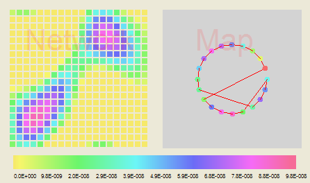

Fall 2004
CSC 5542
Neural Networks
Chris Roeder, croeder@croeder.com
Assignment 2 : Travelling Salesman Problem
A Neural Network Approach to the
Travelling Salesman Problem
This page describes the Travelling Salesman Problem and a neural
network approach to solving it. The focus is on a satisfiying
summary of the intuitinal aspects of the solution.
The Problem
The Travelling Salesman Problem is the problem faced by a salesman who
must visit a number of cities with the least amount of travel.
The Travelling Salesman problem has been described mathematically as a
Hamiltonian path of minimum length of a graph. This just means it is a
distinct cycle that contains all the nodes (BECKMAN). Other
authors describe its complexity as NP (LEWIS). For example a 30
city tour would require examining 29! > 1030.
Traditional Solutions
"Real" Solutions for the TSP are quite varied. They include branch and
bound algorithms which can handle up to 60 cities (WIKIPEDIA-1). Linear
Programming has been used for tours up to 200 cities, and a
specialization called the cutting method was able to solve a
15112 city problem in 2001 (WIKIPEDIA-1). Work on this algorithm
included work by Ray Fulkerson of the Ford-Fulkerson max-flow algorithm
(there is also a mathematical research prize name for him)
(WIKIPEDIA-22).
Early Neural Networks Approaches
Hopfield and Tank suggested an approach in 1985 which spawned
much work on the TSP problem, and other problems as well (HERTZ). A
different neural net approach to the problem is the elastic ring method
that uses a Kohonen network. While not discussed here, it seems
interesting because of the intriguing intuition it is based on: a
rubber band.
Hopfield and Tank's approach is to build a network of NxN neurons where
there are N cities in the tour. The cities are rows and the
possible stops are the columns. Cities are connected to each other with
weights related to the distance between them. In the Hopfield and Tank
model the values are binary. Wolfe's fuzzy approach (WOLFE-1) makes the
values
continuous in efforts to elucidate the inner workings of the network.
Dr. Wolfe's Fuzzy Approach
("Oh How I Regret Having Taken DiffEQ Over the Summer of '87 (and
the resulting 'C')")
As noted above Dr. Wolfe's Fuzzy approach is basically a Hopfield and
Tank approach, but with a continuous (within the limits of a discrete
representation) rather than a binary value for the activation of
each neuron. This raises the issue of how to interpret the
activations, and this is addressed with the "fuzzy readout." As
the Dr. notes in the introduction to his paper, the fuzzy approach
makes it easier to see what's going on in the network. I don't
know that it really behaves any differently, just that its easier to
observe. What follows is a quick summary of his paper
interspersed with editorial comments about my old and rusty math
skills.
The first section of the paper after describing the network is one on a
"subspace approach". Unfortunately I didn't understand it well enough
to discuss. Basically it discusses using an orthogonal projection
to shift the feasible space from a zero-sum space to an affine
space where the sums are one. I understand how this works with the
average of the row and column values, but not why. Perhaps more
time spent with WOLFE-2 would help.
In the next section, Wolfe describes some concepts that you can
see in the activation graph as the network "cooks."
- The centroid is
the center of mass of all the cities.
- The principal axis is
the long dimension of whatever shape the cities take. If it were an
ellipse, it would be the long axis.
- The partition is a line that is
(more/less) perpendicular to the principal axis and bisects it.
Other concepts are mentioned, but introduced as standard with a
reference to a book I don't have immediately available.
(principal components and correlation matrix).
The following section , "TSP Heuristics" uses these concepts to explain
some of the behaviour you see in the display.
- A Centroid Tour is a
tour you get by sweeping a radius out from the centroid around
the centroid. As the radius sweeps around, it picks up the cities in an
order the centroid tour would have.
- A Monotonic Tour is
the tour you would get if you started at one end of the major axis and
swept a perpendicular line along it. You can see this in the display
when a circle is full of zig-zags that don't make any sense.
- A Nearest City Tour is
a tour that would result from a greedy algorithm that started at one
city and just built the tour by finding the next-closest city. This
would be a fun algorithm to add to the application. Even more fun would
be to find a city configuration that results in a really bad tour when
the Nearest City Tour is used.
- If Nearest City is reminiscent of Prim's algorithm, then 2-Opt is reminiscent of Kruskal's.
Instead of choosing the shortest edge as you build the tour end-to-end,
2-Opt builds the tour by replacing edges through the whole tour.
The next section discusses the fuzzy readout. The fuzzy readout
basically looks for the maximum value for a city's stop.
Before discussing performance and other issues, the paper discusses the
Phase I dynamics and presents proofs of how the centroid tour evolves
in the network.
- Eigen Values
- Sinusoidal Emergence
- Phase Differences at either end of the principal axis
- Sinusoids develop in opposite phases for cities on either
side of
the partition.
A full understanding of these would give meaning to the "globs" that
can be seen at various resolutions while the network is developing at
very low energies.
These are particularly fascinating when watching a circle tour form
with the linear display scale set at "low". Note the scale of the
values on the color bar at the bottom.

Conclusion
A truly satisfying explanation to the inner workings of such a neural
net probably require auditing Linear Algebra and Diff. Eq. classes, as
well as reading some of the cited papers.
Possible Future Enhancements to Code
- Show centroid, principal axis and partition on the city graph
- Show centers of mass in the network display
- Provide other initial configurations of cities:
- Ellipses
- "Clumped" arrangements to show extreme behavior of the various
phases. Ideally these clumped configurations would be ones that
could "fool" a nearest-city tour. i.e. Is there a configuration that
whose nearest city tour is not really a good solution?
- Linear
- Show other tours
- Centroid Tour
- Monotonic Tour
- Nearest City Tours (best and worst)
- 2-Opt (almost like Kruskal's)
- non-fuzzy solution
Bugs
Following is an incomplete list of bugs.
- calibration and correctness of color scales hasn't been verified
(and the code is ugly)
- sometimes the simulation doesn't restart right after
hitting 10,000
References
BECKMAN - F.S. Beckman,
Mathematical
Foundations of Programming, p. 103, Addison Wesley, 1981
HERTZ - John Hertz, Anders Krogh, Richard G. Palmer, Introduction to the Theory of
Neural Computation, p. 76, Addison Wesley, 1991
LEWIS - Harry R. Lewis, Christos H. Papadimitriou, Elements of the Theory of
Computation, p. 312, 337 Prentice-Hall, 1981
WIKIPEDIA-1 - http://en.wikipedia.org/wiki/Traveling_salesman_problem
WIKIPEDIA-2 - http://www.fact-index.com/d/d_/d__r__fulkerson.html
WOLFE-1 - William J. Wolfe, A Fuzzy Hopfield-Tank Traveling
Salesman Problem Model
WOLFE-2 - William J. Wolfe and Richard M. Ulmer, Orthogonal Projections Applied to
the Assignment Problem
WOFLE-3 - William J. Wolfe, Jay A. Rothman, Edward H. Chang, William
Aultman, and Garth Ripton, Harmonic
Analysis of Homogenous Networks